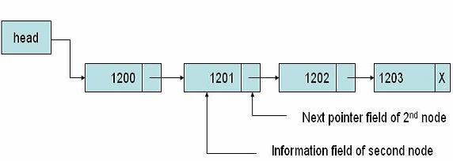

LINKED LIST
In computer science, a linked list is a linear collection of data elements, in which linear order is not given by their physical placement in memory. Each pointing to the next node by means of a pointer. It is a data structure consisting of a group of nodes which together represent a sequence. Under the simplest form, each node is composed of data and a reference (in other words, a link) to the next node in the sequence. This structure allows for efficient insertion or removal of elements from any position in the sequence during iteration. More complex variants add additional links, allowing efficient insertion or removal from arbitrary element references.
TYPES OF LINKED LIST
-
Singly Linked list
Singly linked lists contain nodes which have a data field as well as a 'next' field, which points to the next node in line of nodes. Operations that can be performed on singly linked lists include insertion, deletion and traversal.

more -
Doubly Linked list
In a 'doubly linked list', each node contains, besides the next-node link, a second link field pointing to the 'previous' node in the sequence. The two links may be called 'forward('s') and 'backwards', or 'next' and 'prev'('previous').

more